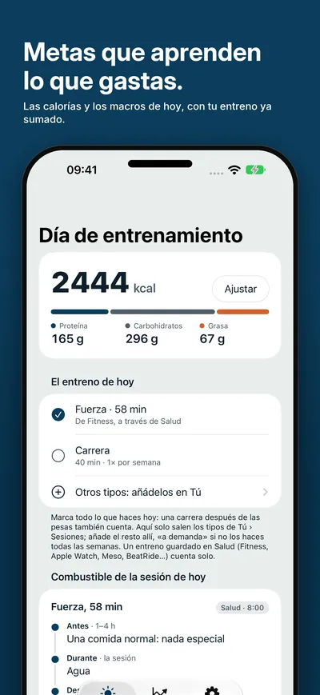
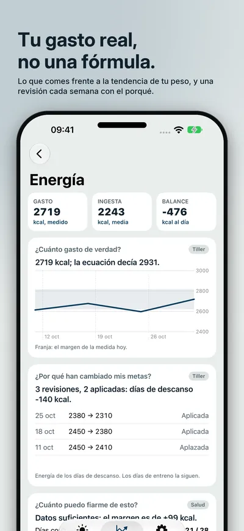
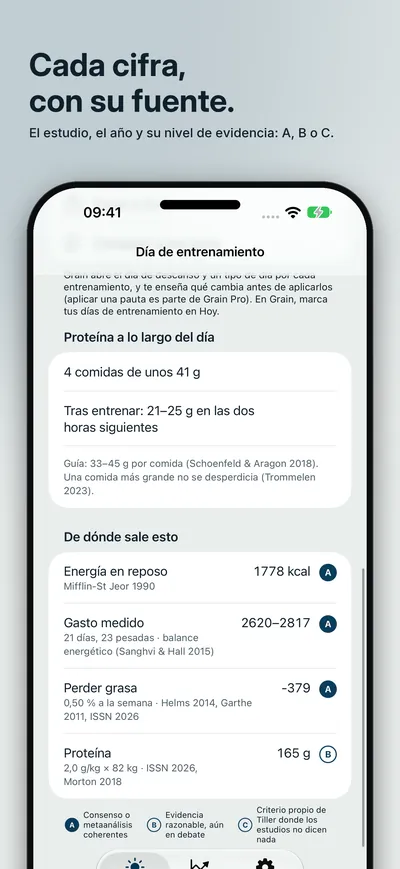
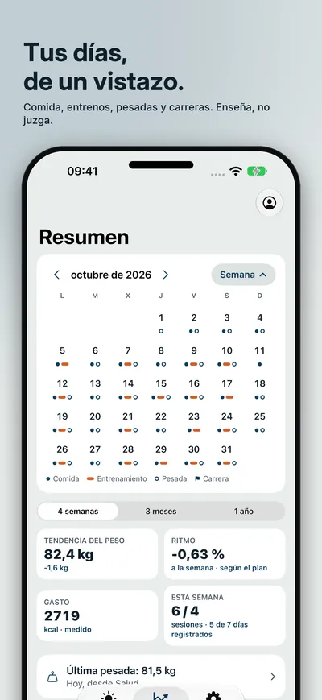
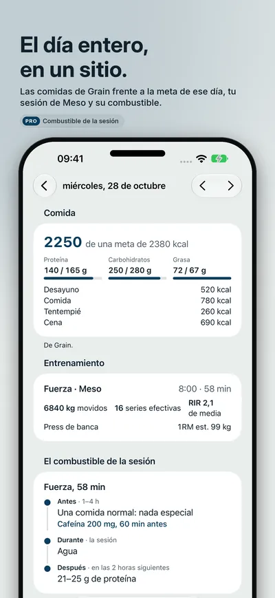
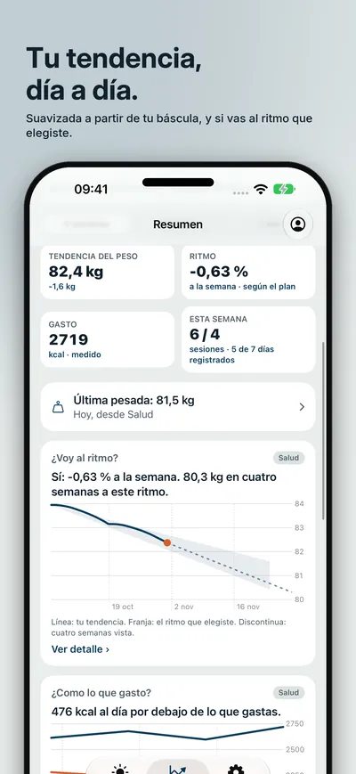
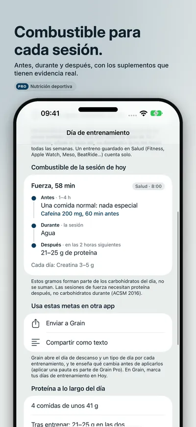
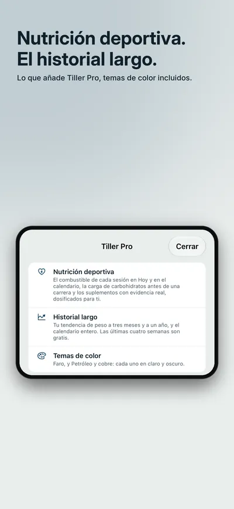

Seize Apps · iOS
Tiller
Tiller calcula tus calorías y macros para los días de descanso y de entreno, aprende lo que gastas de verdad comparando lo que comes con la tendencia de tu peso y te propone metas nuevas cada semana, con el porqué. Cada cifra dice de dónde sale: el estudio, el año y lo sólida que es la evidencia. Enseña, no juzga: ni verde ni rojo.








Qué hace
Una sola cosa, bien hecha.
- 01 / APRENDER
Metas que aprenden
Perder grasa, recomponer, mantener o ganar, con fuerza o resistencia. Tiller lee lo que comes de Grain o de Apple Salud y tu peso de la báscula, mide lo que gastas de verdad en lugar de adivinarlo con una fórmula y te propone tus metas nuevas cada semana. Los días de descanso, de entreno y de carga de carbohidratos tienen las suyas; di qué entrenas hoy, aunque sea más de una cosa, y el día lo suma.
- 02 / EXPLICAR
Cada cifra, con su fuente
«De dónde sale esto» en cada meta: el estudio, el año, por qué se aplica a ti y su nivel de evidencia, A, B o C. La proteína a lo largo del día, toma a toma. ¿Tienes dietista-nutricionista? Escribe su pauta y Tiller la lleva, reajustándola con tu gasto real.
- 03 / VER
Tus días, de un vistazo
Un calendario arriba del Resumen con lo que comiste frente a la meta de ese día, tus entrenos de Meso, BeatRide o Apple Salud, tus pesadas y tus carreras, además de la tendencia de tu peso y si vas al ritmo que elegiste. Tiller Pro añade la nutrición deportiva (combustible de cada sesión, carga de carbohidratos antes de una carrera y suplementos con evidencia real, con su dosis para ti), el historial largo y temas de color: una compra única, con 30 días de prueba gratis.
Privacidad
Tuyo, no nuestro.
Tiller no tiene cuenta. Lo que lee de Apple Salud nunca sale de tu iPhone; lo que escribes (tu perfil, pesadas y metas) se queda en tu dispositivo y en tu propia cuenta de iCloud. Los datos de Grain y de Meso se leen en el dispositivo. Estadísticas de uso anónimas y propias, nunca una cifra tuya, que puedes apagar en Ajustes. Tiller no sustituye a un dietista-nutricionista ni a un médico.
Una app de Seize Apps.